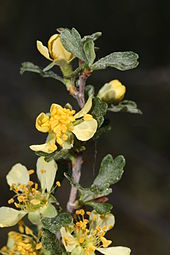

Distribution
The yellow flowers have five petals and darker yellow anthers (Wenas Wildlife Area). Purshia tridentata var glandulosa on dry slope. The plant is found from southeastern British Columbia in the north, east to Montana and Wyoming, south to New Mexico, and west in California. It grows on arid mountainsides and slopes.
Description
Purshia tridentata is a deciduous shrub growing to a height of 1–5 metres (3.3–16.4 ft). It has slender three- to five-lobed leaves 5–20 mm long. It is a nitrogen fixing plant. The flowers are pale yellow, with five petals 6–8 mm long, and darker yellow anthers. The fruit is a cluster of dry, slender, leathery achenes 0.6–2 cm long.
Varieties
There are two named varieties of the species:
Purshia tridentata var. glandulosa — Eastern Sierra Nevada, Southern California.
Purshia tridentata var. tridentata